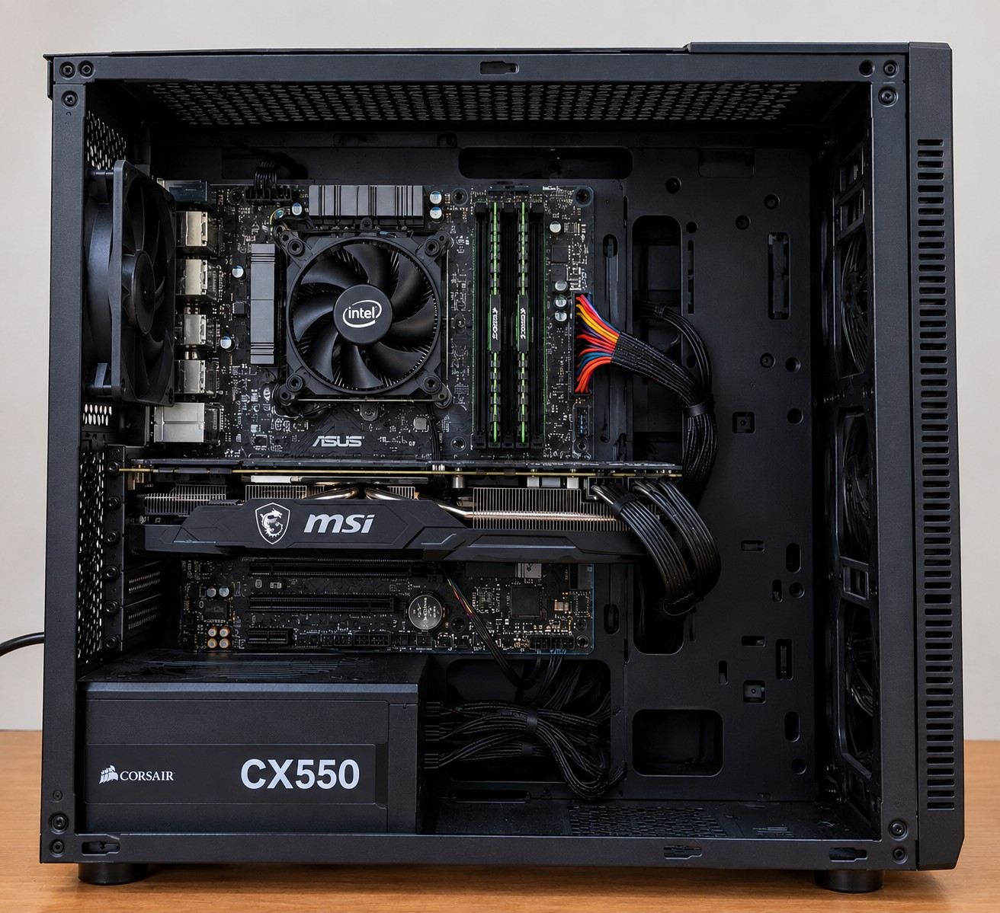

Placa madre
Es la principal placa electrónica de la computadora.
Ver más
La placa madre permite conectar y comunicar diferentes componentes de la computadora.
Un entorno digital para aprender informática
El hardware es el conjunto de componentes físicos de una computadora. Son las partes que podemos ver y tocar.
Explorá cada componente para conocer cuál es su función dentro de la computadora.
Es la principal placa electrónica de la computadora.
La placa madre permite conectar y comunicar diferentes componentes de la computadora.
Es uno de los componentes encargados de procesar las instrucciones.
El procesador ejecuta instrucciones y realiza operaciones necesarias para procesar los datos.
Es una memoria utilizada temporalmente mientras trabajamos con la computadora.
La RAM almacena temporalmente datos y programas que están siendo utilizados.
Es un componente especializado en el procesamiento
de gráficos e imágenes.
< /p>
La GPU procesa gráficos e imágenes y es
especialmente importante en videojuegos,
edición de video y aplicaciones 3D.
Ver más
Observá la imagen y hacé clic en los puntos para descubrir qué componente se encuentra en cada lugar.

Es el componente que procesa las instrucciones y realiza los cálculos necesarios para que la computadora funcione.
Es una memoria utilizada temporalmente mientras trabajamos con la computadora.
Es un componente especializado en el procesamiento de gráficos e imágenes.
Es el componente principal que conecta todos los demás componentes de la computadora.